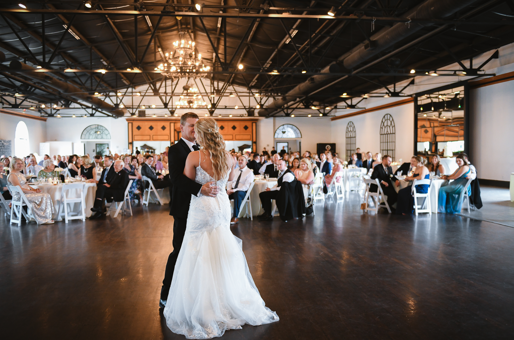
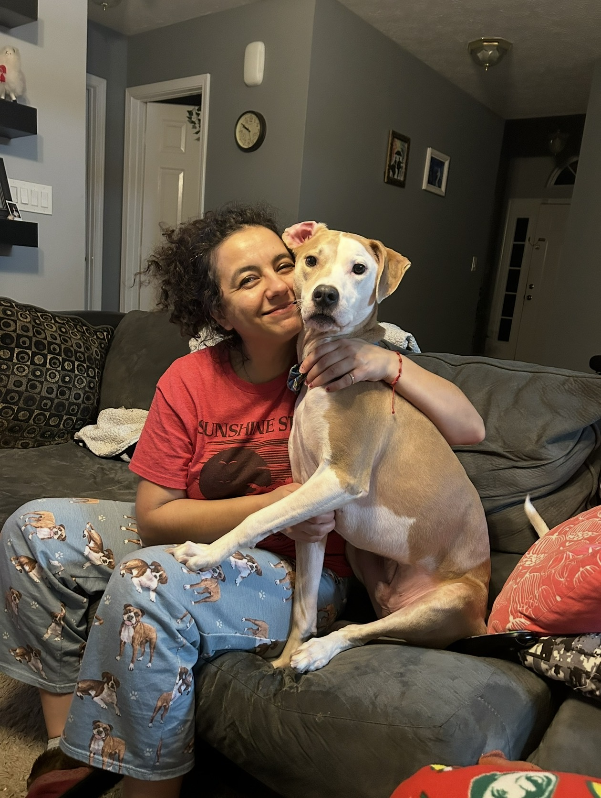
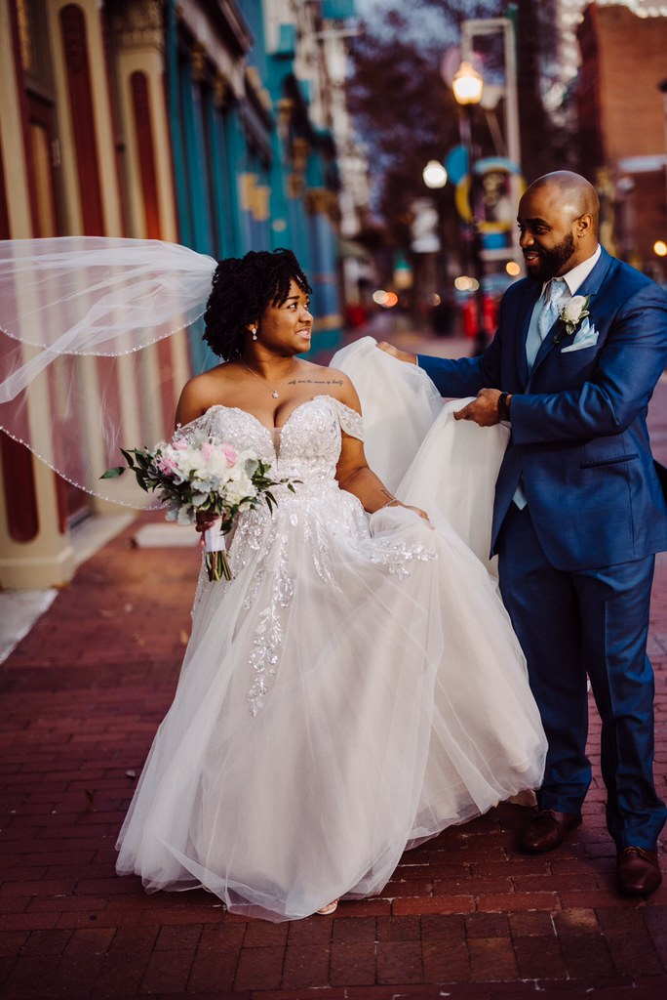
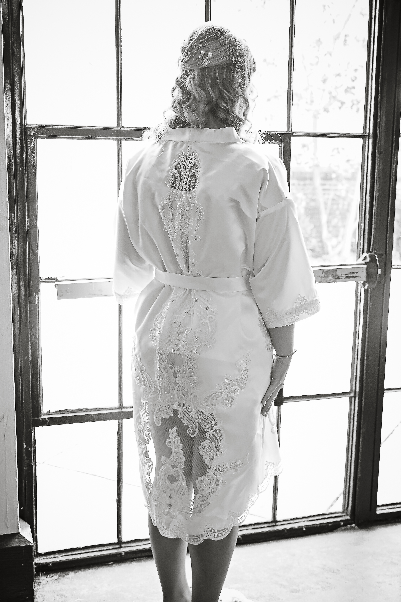
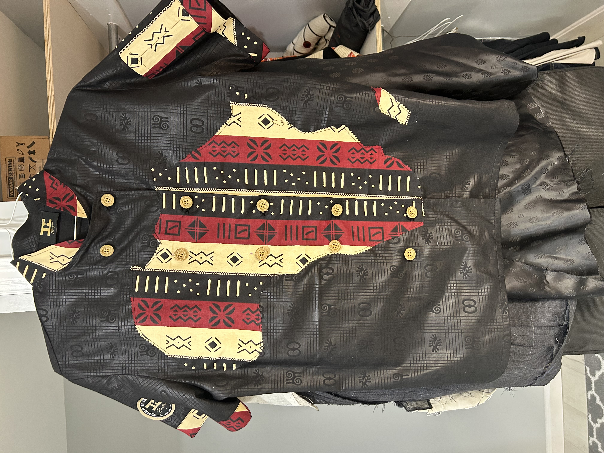
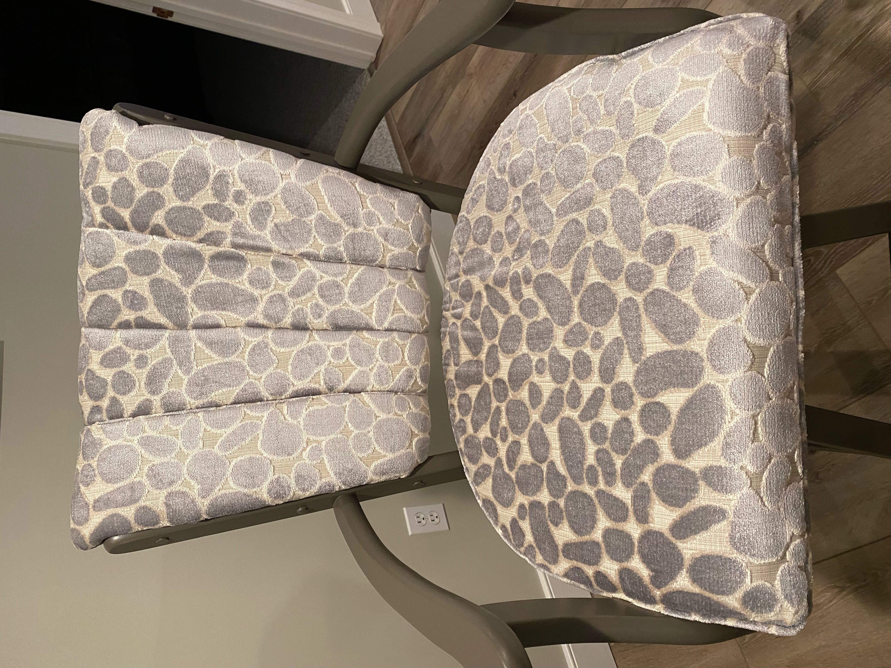
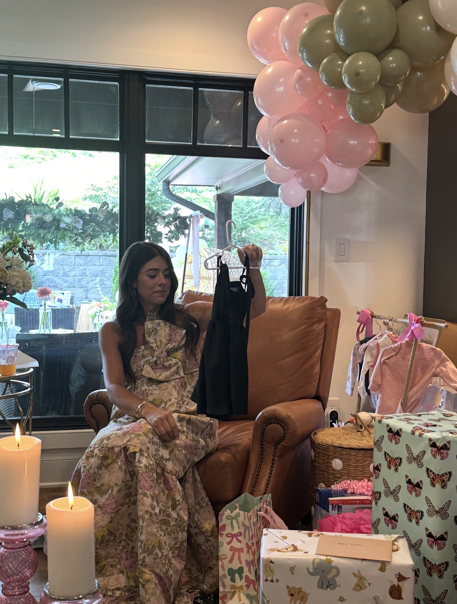

Bridal & occasion
Thoughtful alterations for wedding dresses, bridesmaid dresses, prom gowns, and formalwear.
Discuss your dressEXPERT ALTERATIONS · LOUISVILLE, KY
From the dress you’ll remember forever to the clothes you reach for every day. Expert alterations and custom sewing, with personal care in every stitch.

A LITTLE ADJUSTMENT. A BIG DIFFERENCE.
One special occasion or a whole wardrobe refresh. Mary brings experienced craftsmanship to projects big and small.
Thoughtful alterations for wedding dresses, bridesmaid dresses, prom gowns, and formalwear.
Discuss your dressHems, waist adjustments, sleeves, and fit refinements for the pieces you love to wear.
Find a better fitHave something in mind? Talk with Mary about custom garments, specialty pieces, and sewing projects.
Share your ideaClothing repairs, curtains, cushions, and textile adjustments that bring useful pieces back to life.
Ask about your projectDon’t see your project here? Just ask Mary. There’s more to sewing than a list of services.

MEET THE HANDS BEHIND THE STITCHES
Hi, I’m Mary Antonova. With over 25 years of sewing experience, I bring an eye for detail and a love of craftsmanship to every project.
At Mary’s Alterations, it starts with listening: how you want a garment to feel, what you’d like to change, and the details that matter to you. From a simple repair to a special occasion, your pieces receive thoughtful, individual attention.
FROM MARY’S PORTFOLIO
A glimpse at bridal work, custom pieces, and the finishing touches that make each project personal.





LET’S MAKE IT SIMPLE
Call or email Mary with a little about your garment or sewing project.
Discuss the fit, fabric, changes, and timing so you know what to expect.
Mary brings experienced care and attention to the work you agree on together.
A FEW HELPFUL DETAILS
Bridal and formalwear, everyday clothing, repairs, custom sewing, and home textiles. If your project is unusual, contact Mary to discuss what you have in mind.
Pricing depends on the garment, fabric, and work involved. Contact Mary to talk through your project and ask about an estimate.
Reach out as soon as you know what you need, especially for weddings or other events. Share your event date so Mary can discuss availability and timing.
Ask Mary what your project needs. For dress or trouser alterations, bringing the shoes and undergarments you plan to wear can help with assessing the fit and length.
LOUISVILLE, KENTUCKY
Have a piece you love, a special day ahead, or an idea to bring to life? Let’s talk about it.
GET IN TOUCH WITH MARY
(502) 554-4223 marysewusa@gmail.comTell Mary what you’d like altered or made, and mention any event date or deadline.
Email about your project